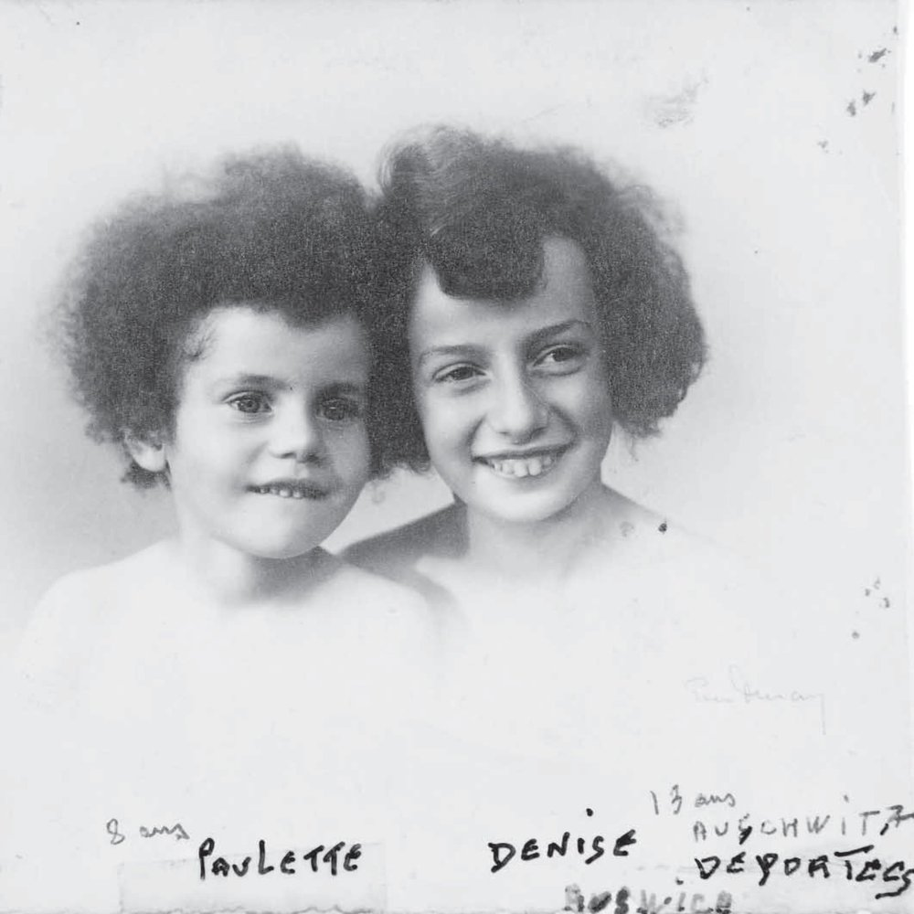

Portrait d’archive
Enfants Krampner
Denise KRAMPNER
Denise KRAMPNER est née le 10/02/1931 à Lyon en France.
Rassemblée à Lyon, elle est déportée à Auschwitz le 07/03/1944 par le convoi n°69. Elle est morte en déportation.
Déportée avec sa sœur Paulette, son frère Lucien (14/07/1923, Lyon), sa mère Caroline née DItor (21/12/1898, Villefranche-sur-Saône) et son père Ferdinand (15/02/1898, Pau). Les parents tenaient une école de sténodactylo, rue Mazenod, Lyon.
Dernière adresse connue : 51, rue Moncey 69003 (Lyon)
École fréquentée : Collège Raoul Dufy - Anciennement collège Chaponnay (Lyon)
Nom : KRAMPNER
Prénom(s) : Denise
Date naissance : 10/02/1931
Âge (ans) : 13
Lieu naissance : Lyon
Pays ou département : Rhône
Lieu rassemblement : Lyon
Dernière adresse : 51, rue Moncey
Ville : Lyon
Code postal : 69007
N° Convoi : 69
Date déportation : 07/03/1944
Informations diverses : Fille de Ferdinand Krampner et de Caroline née Ditor. Les parents tenaient une école de sténodactylo, rue Mazenod, Lyon 3ème. Elève à l’Ecole Mazenod, place Guichard, 74 Rue Mazenod, 69003 Lyon (témoin M. Altarac). Denise a été scolarisée à l’Ecole maternelle de la Part-Dieu (EMPD) puis inscrite en octobre 1937 à l’Ecole Mazenod (place Guichard, 74 Rue Mazenod, 69003 Lyon).
Ferdinand Krampner est arrêté le 04/02/1944 à son magasin situé au 63 rue Mazenod. Caroline Krampner est arrêtée le même jour avec ses enfants devant l’appartement de son frère Henry Ditor, fabricant de soieries (Manufacture de voiles pour deuil), lors de l’arrestation de celui-ci au 111 rue Vendôme (Source: APAFFIDA, Association des parents et amis des familles françaises israélites déportées en Allemagne). Hébergée avec sa sœur à la maison du Refuge (77, rue de la Villette, 69003 Lyon; du 05/02/1944 au 19/02/1944) (Source: Sylvie Altar).
Denise est déportée avec sa sœur Paulette, son frère Lucien (14/07/1923, Lyon), sa mère Caroline née Ditor (21/12/1898, Villefranche-sur-Saône) et son père Ferdinand David (15/02/1898, Pau) et son oncle maternel Henry Ditor qui habitait au 111, Rue Vendôme, Lyon .
Krampner (Denise), née le 10 février 1931 à Lyon (3e) (Rhône), décédée le 12 mars 1944 à Auschwitz (Pologne). JO
Krampner, née Ditor (Caroline) le 21 décembre 1890 à Villefranche-sur-Saône (Rhône), décédée le 12 mars 1944 à Auschwitz (Pologne). Krampner (Ferdinand, David), né le 15 février 1898 à Pau (Basses-Pyrénées), décédé le 12 mars 1944 à Auschwitz (Pologne) (JO). Ditor (Henri, Joseph), né le 19 septembre 1887 à Villefranche-sur-Saône (Rhône), décédé le 12 mars 1944 à Auschwitz (Pologne) et non le 12 mars 1944 en Allemagne.
Lieu de déportation : Auschwitz
Lieu de départ : Drancy
Nombre total de déporté·e·s du convoi : 1501
Gazé·e·s à l'arrivée : 1311 (87,3 %)
Survivant·e·s en 1945 : 34 (2,3 %)
Paulette KRAMPNER
Paulette KRAMPNER est née le 12/05/1936 à Lyon en France.
Rassemblée à Lyon, elle est déportée à Auschwitz le 07/03/1944 par le convoi n°69. Elle est morte en déportation.
Déportée avec sa sœur Denise, son frère Lucien (14/07/1923, Lyon), sa mère Caroline née DItor (21/12/1898, Villefranche-sur-Saône) et son père Ferdinand (15/02/1898, Pau). Les parents tenaient une école de sténodactylo, rue Mazenod, Lyon.
Dernière adresse connue : 51, rue Moncey 69003 (Lyon)
École fréquentée : Ecole Saint-Exupéry (Lyon)
Nom : KRAMPNER
Prénom(s) : Paulette
Date naissance : 12/05/1936
Âge (ans) : 7
Lieu naissance : Lyon
Pays ou département : Rhône
Lieu rassemblement : Lyon
Dernière adresse : 51, rue Moncey
Ville : Lyon
Code postal : 69007
N° Convoi : 69
Date déportation : 07/03/1944
Informations diverses : Fille de Ferdinand Krampner et de Caroline née Ditor. Les parents tenaient une école de sténodactylo, rue Mazenod, Lyon 3ème. Paulette a été scolarisée à l’Ecole maternelle de la Part-Dieu (EMPD) puis inscrite en octobre 1942 à l’Ecole Mazenod (place Guichard, 74 Rue Mazenod, 69003 Lyon) (témoin M. Altarac).
Ferdinand Krampner est arrêté le 04/02/1944 à son magasin situé au 63 rue Mazenod. Caroline Krampner est arrêtée le même jour avec ses enfants devant l’appartement de son frère Henry Ditor, fabricant de soieries (Manufacture de voiles pour deuil), lors de l’arrestation de celui-ci au 111 rue Vendôme (Source: APAFFIDA). Hébergée avec sa sœur à la maison du Refuge (77, rue de la Villette 69003 Lyon; du 05/02/1944 au 19/02/1944) (Source: Sylvie Altar).
Elève à l’Ecole Mazenod place Guichard, 74 Rue Mazenod, 69003 Lyon (témoin M. Altarac). Pas d'archives à ce jour.
Krampner (Paulette), née le 12 mai 1936 à Lyon (3e) (Rhône), décédée le 12 mars 1944 à Auschwitz (Pologne). JO
Krampner, née Ditor (Caroline) le 21 décembre 1890 à Villefranche-sur-Saône (Rhône), décédée le 12 mars 1944 à Auschwitz (Pologne). Krampner (Ferdinand, David), né le 15 février 1898 à Pau (Basses-Pyrénées), décédé le 12 mars 1944 à Auschwitz (Pologne) (JO). Ditor (Henri, Joseph), né le 19 septembre 1887 à Villefranche-sur-Saône (Rhône), décédé le 12 mars 1944 à Auschwitz (Pologne) et non le 12 mars 1944 en Allemagne.
Lieu de déportation : Auschwitz
Lieu de départ : Drancy
Nombre total de déporté·e·s du convoi : 1501
Gazé·e·s à l'arrivée : 1311 (87,3 %)
Survivant·e·s en 1945 : 34 (2,3 %)
Lucien KRAMPNER
Lucien KRAMPNER est née le 14/07/1923 à Lyon en France.
Arrété à Lyon, il est déportée à Auschwitz le 07/03/1944 par le convoi n°69. Il est morte en déportation.
Déporté avec sa sœur Denise, sa soeur Paulette, sa mère Caroline née DItor (21/12/1898, Villefranche-sur-Saône) et son père Ferdinand (15/02/1898, Pau). Les parents tenaient une école de sténodactylo, rue Mazenod, Lyon.
Dernière adresse connue : 51, rue Moncey 69003 (Lyon)
École fréquentée : ?
Nom : KRAMPNER
Prénom(s) : Lucien, Lazare
Date naissance : 14/07/1923
Âge (ans) : 20
Lieu naissance : Lyon
Pays ou département : Rhône
Lieu rassemblement : Lyon
Dernière adresse : 51, rue Moncey
Ville : Lyon
Code postal : 69007
N° Convoi : 69
Date déportation : 07/03/1944
Informations diverses : Déporté avec ses soeurs, sa mère Caroline née Ditor (21/12/1898, Villefranche-sur-Saône) et son père Ferdinand (15/02/1898, Pau); Les parents tenaient une école de sténodactylo, rue Mazenod, Lyon 3ème. Est déporté par le même convoi, leur oncle Henri Ditor
Krampner (Lucien, Lazare), né le 14 juillet 1923 à Lyon (3e) (Rhône), décédé le 12 mars 1944 à Auschwitz (Pologne).
Krampner, née Ditor (Caroline) le 21 décembre 1890 à Villefranche-sur-Saône (Rhône), décédée le 12 mars 1944 à Auschwitz (Pologne). Krampner (Ferdinand, David), né le 15 février 1898 à Pau (Basses-Pyrénées), décédé le 12 mars 1944 à Auschwitz (Pologne) (JO). Ditor (Henri, Joseph), né le 19 septembre 1887 à Villefranche-sur-Saône (Rhône), décédé le 12 mars 1944 à Auschwitz (Pologne) et non le 12 mars 1944 en Allemagne.
Lieu de déportation : Auschwitz
Lieu de départ : Drancy
Nombre total de déporté·e·s du convoi : 1501
Gazé·e·s à l'arrivée : 1311 (87,3 %)
Survivant·e·s en 1945 : 34 (2,3 %)